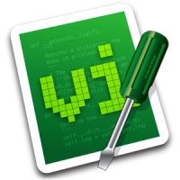

Your browser doesn't support the features required by impress.js, so you are presented with a simplified version of this presentation.
For the best experience please use the latest Chrome, Safari or Firefox browser. Upcoming version 10 of Internet Explorer should also handle it.
Seja produtivo com

Quem é você?
Gilson Filho
- Programo há 5 anos
- Desenvolvedor web há 4 anos
- Python, Java e ASP
- Moderador do GruPy-DF
- Usuário linux há 4 anos
Vamos por partes
Primeiro vamos aprender o

O que é o Vi?
Ele é um editor de texto que foi feito para ser simples e prático
Ele foi criado para ser usado no UNIX e na época em que tudo era nos terminais, ou seja, sem
interface gráfica.
Pontos negativos
- Interface 100% texto
- Não pode-se utilizar o mouse
- Não é NADA amigável
- Não é possível mover com facilidade o cursor pelo texto
Pontos positivos
- Vi é o único editor padrão em qualquer sabor Unix
- É pequeno, então carrega rapidamente e não ocupa memória
- Pode ser usado em qualquer layout de teclado;
- Por ser 100% texto, sua dependência de configurações é mínima
- Seus comandos aceitam expressões regulares tornando versátil e poderoso
- Muito mais
visualize your big thoughts
by positioning, rotating and scaling them on an infinite canvas
the only limit is your imagination
have you noticed it's in 3D*?